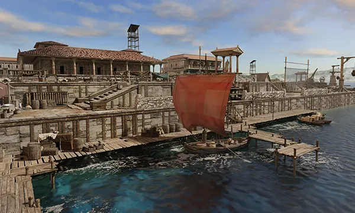

Puerto de Pandora
Abrir en la wiki →Pueblo/puerto. Esta importante ciudad del Imperio comercia con otros países a través del mar de Lir
- Tipo
- pueblo/puerto
- Conecta con
- Gran cascada de Zethus, Caladero de Pandora, Posta de Eochaid, Paso del Brigadier, Fuerte Dione, Paso de Utuna